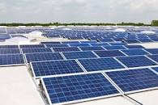

600 MW DESERT solar factory built in turkey by J.v.G. technology GmbH
Benjamin MendyOCT 1, 2019
This clip www.youtube.com/watch?v=lm3Opnjr1Xc shows a factory big size of up to 600 MW for DESERT solar modules from washing glass to final hipot tester. It has a total size of nearly 4 hectars with extensions of another 2,5 MW for junction box, inverter and DESERT solar cell production.
Check out this video of the solar factory click here